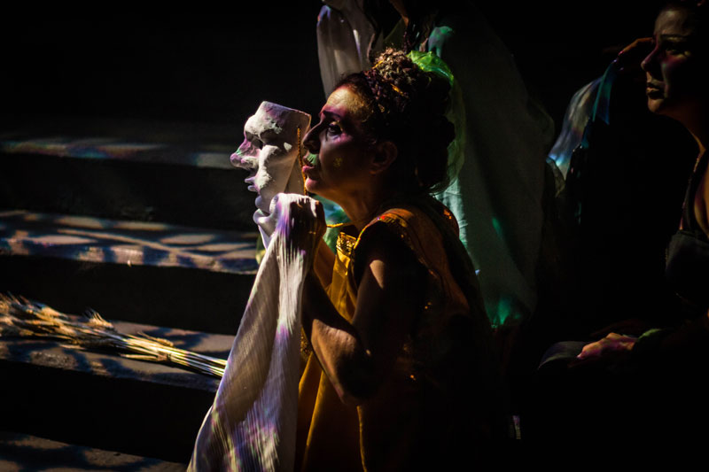
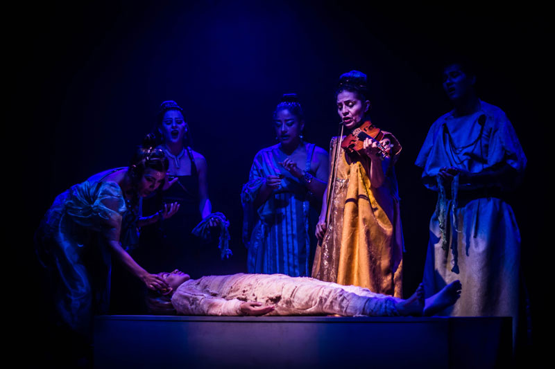
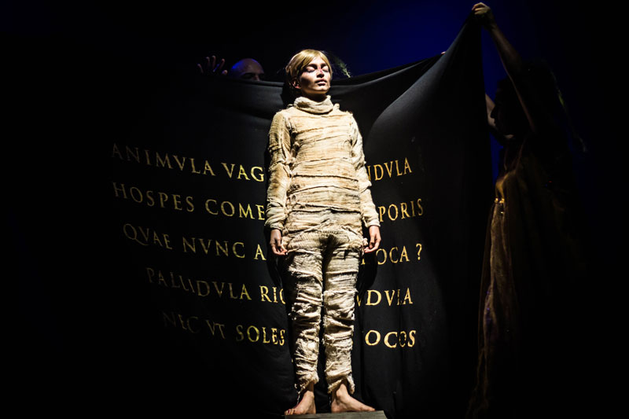
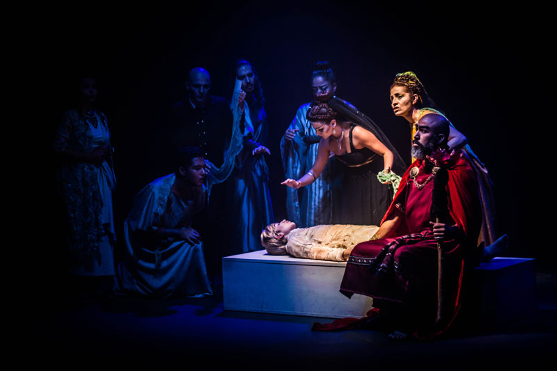
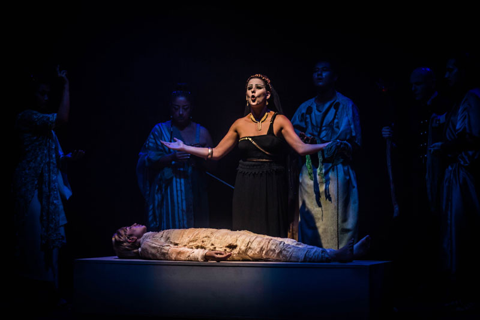

Antínoo o la sugestión poética
Por Andrés Álvarez Arboleda
Publicado en opinionalaplaza.com el julio 27 del 2021

En la elegía teatral Antínoo, Matacandelas volvió sobre el complejísimo universo poético de Fernando Pessoa. Al igual que su antecedente literario, esta obra, que se presenta por primera vez fuera de la sede del colectivo teatral en el Festival Internacional de Teatro El Gesto Noble, no admite una interpretación unívoca. Más aún, su lenguaje escénico parece renunciar a la precisión comunicativa en aras de la sugestión poética: los personajes hablan en un tono oracular, la escenografía no sitúa al espectador en un espacio-tiempo definido, las acciones físicas de los actores son de una muy cuidada contención; sin embargo, en conjunto, la obra resulta tan conmovedora –perturbadora, incluso– como la lluvia que hiela el alma del emperador Adriano, ante la vista del cuerpo muerto de su amado.
En efecto, la obra comienza con un cuadro escénico en el que un personaje contextualiza lo que podríamos denominar la trama presente en el poema dramático de Pessoa: el mancebo Antínoo se ha ahogado en las aguas del Nilo, y Adriano sufre terriblemente su pérdida. No obstante, este tema es apenas el punto de partida, el pretexto, porque el conflicto representado en escena desborda lo puramente narrativo o anecdótico. En este sentido, que el acontecimiento teatral suceda en una especie de no-tiempo y de no-lugar, y en un campo de sentido deliberadamente ambiguo, genera en el espectador una sensación de extrañamiento que le abre las puertas a su propia angustia y a su propia reflexión.

Antínoo de Matacandelas es, de esta manera, una obra que opera por sublimación: es en el alma del espectador donde finalmente se desarrolla el drama, porque el conjunto de los elementos formales e ideológicos que le propone la puesta en escena –más que contarle una historia– "detona" simbólicamente sus propias experiencias de duelo, de erotismo, de amor desaforado.
Pero, ¿en qué elementos estéticos específicamente se construye esta atmósfera teatral, que encuentra en su poder sugestivo una virtud fundamental? Como se dijo anteriormente, la escenografía por sí sola genera, si es lícito el uso de estos términos, una des-territorialización y una des-temporalización del drama. A la entrada del público, la densa niebla artificial ya ha inundado un escenario casi desnudo de objetos y de telas, imprimiendo un carácter onírico al espacio, lo que permite que Antínoo se descargue del peso referencial (los datos históricos, sociales y políticos relativos a la Roma Imperial) que, en vez de facilitar, podría entorpecer el establecimiento de una relación con la actualidad espiritual de los espectadores.
Tal vez la única distorsión sobre este principio sea la aparición del violín, que se ve anacrónico en escena, que no logra insertarse en la propuesta espaciotemporal de la obra y, por lo tanto, tampoco en su poética.
Por otro lado, la austeridad escenográfica permite que la rigurosa dramaturgia de la luz, que se consolida como un rasgo de la producción teatral de Matacandelas, mantenga en buena medida la tensión dramática: en esta obra las luces le dan al espectador las pautas de atención sobre la escena y lo involucran emotivamente. Así, en el Gesto Noble, la incorporación –por este medio– de una escalera situada fortuitamente detrás de la sala de teatro (y que parecían conducir a otro mundo) y la proyección de las imágenes del universo hacia el final de la obra, ampliaron el espacio de representación y pusieron de relieve la reflexión sobre la insignificancia del ser humano ante la vastedad del cosmos.

Es más: no solo gracias a este recurso técnico la gestualidad de los actores y actrices adquiere una apariencia escultórica, sino que también se establece una separación visual, que es también ontológica, entre los dioses impávidos y los humanos que se desgarran, que sucumben ante el destino eterno e inevitable de la muerte.
Si bien Antínoo no asume precisamente las formas del teatro estático, como sí lo hacen las versiones que Matacandelas ha realizado de O Marinheiro de Pessoa y Los ciegos de Maeterlinck, las actuaciones en la obra son especialmente contenidas (ni qué decir de la efectuada por la actriz que encarna el cadáver del mancebo). Los desplazamientos lentos, las pausas y los silencios que dejan escuchar la gota de agua que insistentemente cae y profundiza el ambiente de desolación, construyen una ritualidad fúnebre. "Yo no hago teatro, yo hago misas", diría Luigi Maria Mussati, muy cercano a los procesos creativos del colectivo teatral; y no es otra la impronta que desarrollaron en esta obra Cristóbal Peláez y Juan David Correa.

Esta idea se confirma también en el carácter oracular de los textos pronunciados en la obra. Dicho carácter es acentuado por los efectos sonoros que deshumanizan las voces de los actores cuando sus personajes, en el éxtasis, participan de la naturaleza de los dioses.
De hecho, la sugestión poética en Antínoo de Matacandelas –en todos los elementos que aquí se han descrito– conlleva una ritualidad, aunque la función de la obra de arte no sea mítica-religiosa sino estética. De cualquier manera, el ritual, que sin importar el espacio y el tiempo en el que se represente conserva un mismo ámbito de significación, logra liberarnos de la pérdida de sentido frente a las situaciones más sobrecogedoras: en este caso, la muerte, la pérdida de un ser amado. Probablemente, Matacandelas a través de Antínoo sublime la partida de Diego Sánchez. Por la capacidad sugestiva de la obra, a los demás espectadores nos corresponde sublimar nuestras propias pérdidas.
